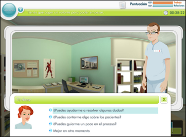

 |
|
Las posibilidades de acción son tan amplias como la vida real, aunque por norma general las que se realizan sobre objetos implican la manipulación de los mismos, mientras que las que se refieren a personas suelen implicar establecer diálogos con ellas. No te olvides de revisar los escenarios e ir probando aquellas interacciones que consideres correctas. Utiliza tu sentido común y todo lo que has aprendido con anterioridad sobre el tema. |